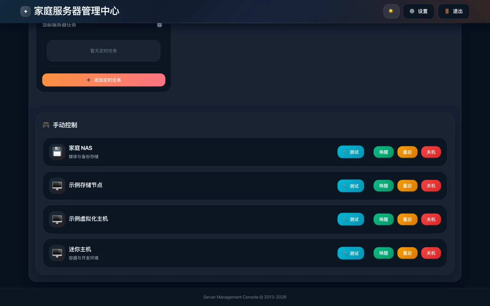
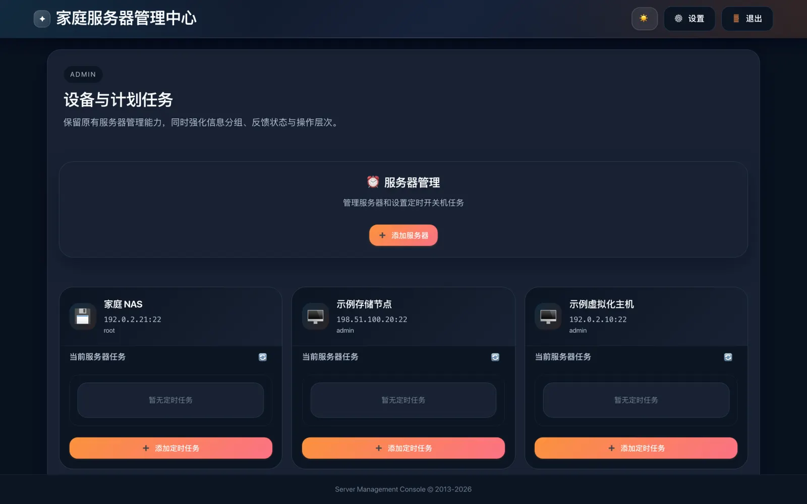
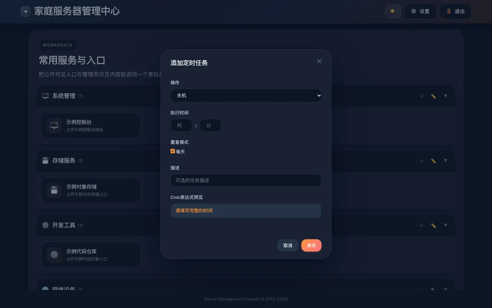
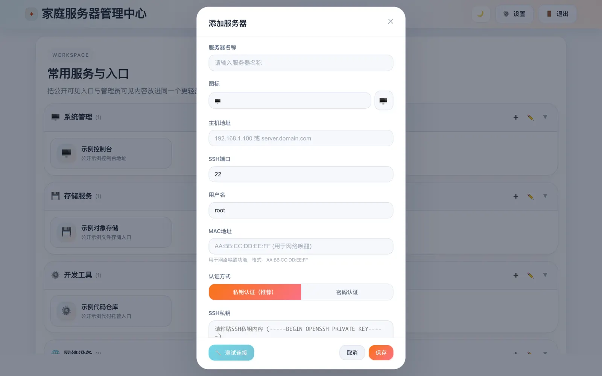
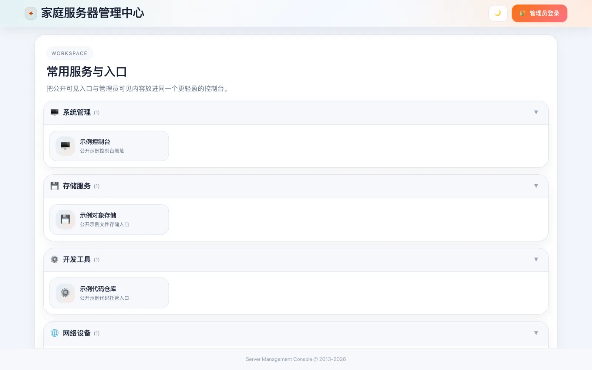
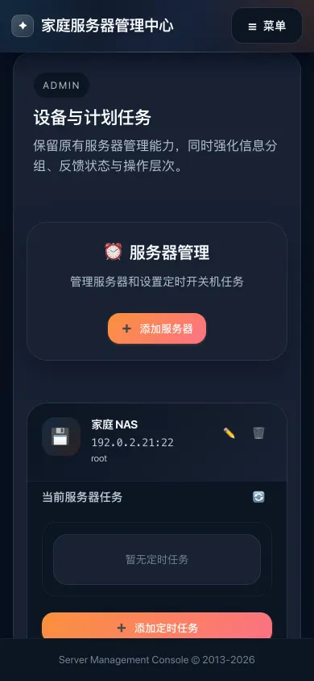

网络唤醒远程开机
为服务器填好 MAC 地址，点「唤醒」就会向 255.255.255.255:9 发送网络唤醒魔术包。
家庭服务器管理中心是一个自托管的 Web 控制台：用网络唤醒远程开机，通过 SSH 关机和重启，把定时关机写进服务器自己的 crontab，再把家里常用服务的入口集中到一页。
ready · 3 nodes · 0 online
登录管理员账号后，服务器列表、手动控制和定时任务都在同一页；未登录的访客只看到你允许公开的服务入口。
为服务器填好 MAC 地址，点「唤醒」就会向 255.255.255.255:9 发送网络唤醒魔术包。
通过 SSH 执行 /sbin/shutdown -h now 或 /sbin/reboot。支持私钥与密码认证，保存前可以先测试连接并查看耗时。
选好时间和每天或指定星期，任务会写进目标服务器自己的 crontab，管理中心离线时照常执行；已有任务可查看、编辑、停用和删除。
按分组整理 NAS、路由器、影音等常用服务。每个入口可填内网、FRP、IPv6、Cloudflare 四种地址，内网地址只对管理员显示，分组可设为未登录可见。
管理员账号支持 TOTP 双因素认证，可选接入 Google、GitHub、QQ 第三方登录，访问令牌过期后会提示重新登录。
前端与后端各一个镜像，同时提供 linux/amd64 与 linux/arm64。所有数据保存在一个 SQLite 数据卷里，备份只需复制这个卷。
界面自带浅色与深色两套主题，手机上同样可以操作。





截图来自本机启动的演示实例，服务器与入口均为示例数据。

准备一台装有 Docker 与 Docker Compose 的 Linux 主机（amd64 或 arm64），并和要管理的服务器在同一个局域网里。镜像公开发布在 Docker Hub，直接拉取即可。
新建一个目录，下载 docker-compose.yml 和环境变量模板。
mkdir home-server-manager && cd home-server-manager
curl -LO https://github.com/wangwanjie/my_web_page/releases/latest/download/docker-compose.yml
curl -L -o .env https://github.com/wangwanjie/my_web_page/releases/latest/download/env.example为三个签名密钥写入随机值，再把 APP_BASE_URL 改成你访问面板的地址。
for k in JWT_SECRET JWT_REFRESH_SECRET OAUTH_STATE_SECRET; do
sed -i "s|^$k=.*|$k=$(openssl rand -hex 32)|" .env
done启动后在浏览器打开 http://主机IP:3800。
docker compose up -d首次启动的管理员账号是 admin，密码 ChangeMe123!。
拉取新镜像后重建容器，数据卷会保留。
docker compose pull && docker compose up -d和 Release 中的文件一致（省略了注释）。
services:
backend:
image: ${BACKEND_IMAGE:-docker.io/vanjayak/server-management-backend:latest}
container_name: home-server-manager-backend
restart: unless-stopped
env_file:
- .env
environment:
- NODE_ENV=production
- PORT=3001
- DB_PATH=/app/data/database.db
# network_mode: host
volumes:
- backend_data:/app/data
frontend:
image: ${FRONTEND_IMAGE:-docker.io/vanjayak/server-management-frontend:latest}
container_name: home-server-manager-frontend
restart: unless-stopped
depends_on:
- backend
ports:
- "${FRONTEND_PORT:-3800}:80"
# extra_hosts:
# - "backend:host-gateway"
volumes:
backend_data:网络唤醒魔术包从后端容器发往广播地址，Docker 默认的桥接网络通常不会把它转发到局域网。需要远程开机时，取消 network_mode: host 和 extra_hosts 两处注释后重新 docker compose up -d，后端会直接使用宿主机网络并占用 3001 端口。目标机器还需要在 BIOS 与网卡里开启 Wake-on-LAN。
服务器列表、SSH 凭据、服务入口和设置都保存在 backend_data 数据卷的 SQLite 文件里。没有统计和遥测。
SSH 密码与私钥以原文保存在数据库中。请限制宿主机与数据卷的访问权限，并优先使用权限受限的私钥。
面板能直接关停你的服务器。建议只在局域网或 VPN 内访问；确需公网访问时放在 HTTPS 反向代理之后，并开启双因素认证。